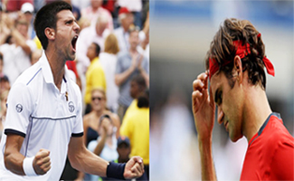
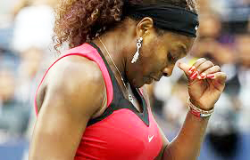
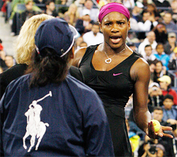
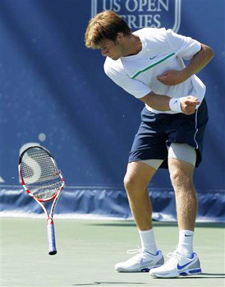
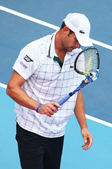
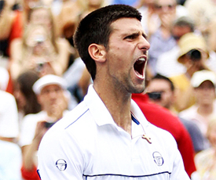
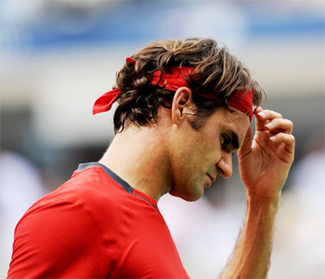
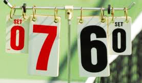
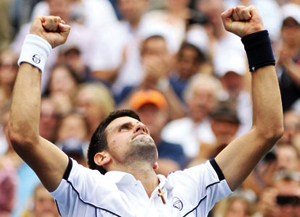
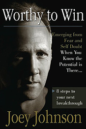

Previous: Replacing Confidence with Emotional Discipline | 🏠 Mental Game Home | Next: Rod Laver and The Mean Streak
Resistance Points and Breakthrough Points
Comprehensive unified tennis knowledge base — Fundamentals, Stroke Analysis, Reference Library, and more
Resistance Points and Breakthrough Points
Joey Johnson
The “zone”--allegedly where the maestro conducts a perfect symphony.
In the world of performance, there is a popular term: "the zone." According to the theory, when you are in the zone everything comes together like a maestro directing a perfect symphony.
But in my experience true zone performances are elusive. Belief in the need to find the zone is a type of perfectionist thinking that can create expectations that actually increase pressure.
You do not have to be perfect as you compete and do not need all the skills known to man to breakthrough and reach your competitive potential. Thinking that you do is a sure way to erode your confidence and keep you seeking for answers you will never find.
Momentum
Your performance goals and dreams hinge on your ability to develop and build forward momentum. By momentum I mean your ability to produce results with consistency.
Have you ever experienced big wins, followed by bad losses? If this pattern repeats over time, it will cause you to question your ability, which in turn will hinder the chances of building positive momentum on a consistent basis.
Within any performance, there are bumps in the road. There are momentum shifts in negative and positive directions. We can see this at the highest levels even with the toughest competitors like Serena Williams in the last two U.S. Opens, and in the remarkable turn around in this year’s semifinal between Novak Djokovic and Roger Federer.

Every match, even at the highest levels, has momentum shifts in both directions.
To understand these shifts in momentum, we need to understand two concepts: resistance points and breakthrough points. So let’s examine them in this article and see how to use them to move toward your potential without worrying that you have to be in the "zone" in order to have breakthrough results.
Resistance Points
Resistance points are a part of competition and they always come up en route to any championship performance. Too many players are hoping that no resistance points will enter into their performances, and this is a huge mistake.
In fact, effectively managing resistance points will push you to have breakthrough points. They provide the opportunity to build a belief in oneself that can and will launch you forward.
When someone is not prepared for resistance, they expect a smooth ride and when that smooth ride encounters bumps along the way, the performer is blindsided and does not react well to the pressure of the moment. This happened to Serena Williams at the Us.Open this year, when after hitting a forehand winner, she had the point taken away for pumping herself up before the point was technically finished, hindering her opponent Sam Stosur.

Even a player like Serena can be blindsided by unexpected developments.
Even a player like Serena was blindsided by this unexpected development, and unprepared to deal with the emotional consequences. With Serena on the verge of climbing back into the match, the call was a turning point leading to Stosur’s victory.
Lack of preparation for resistance points can open the door to confusion and increased anxiety. This state of anxiety then produces doubts and negative emotions and a lack of self trust under pressure.
How well you are prepared to handle uncertainty will determine whether or not you can stay focused throughout the entire performance. Preparing for uncertainty will keep you grounded and give you the chance to build a solid foundation without feeling the need to have the near perfect "zone performance" every time you compete.
This is the pathway will provide you with the foundation and focus you need to gain precious momentum. If managed correctly a resistance point can provide the needed push, including a burst of energy, to get to the next level in a performance.
The key to managing resistance points begins with first recognizing when they occur in your performances. This awareness allows you to build strategies ahead of time to mentally and physically rehearse during practice to shift momentum back in a positive direction. When you can do this under match pressure you will start to have the breakthroughs you desire.

Serena reached a resistance point she could not overcome when called for a foot fault in the 2010 Open.
Resistance Examples
A common resistance point in competitive tennis occurs when players lose emotional control by getting angry at line calls. Again, this can affect even the best players in the world--think of Serena’s reaction to the foot fault call against her last year at the Open in 2010. One of the best competitors and most mentally tough players ever to play professional tennis, reached another resistance point she could not overcome at a critical junction in a huge match. If it happens to the greatest players in the world, how much more so at all other levels?
To give an example from my own coaching experience, a talented but mentally undisciplined college player I was working with developed a habit of blaming losses on the fact that she was being "cheated" out of matches.
I asked her to tell me about how this resistance point usually presented itself. Her response was predictable, "When I play these higher ranked players there will inevitably be a few line calls on big points that drive me into fits of anger during the match."
"Once I realize they will not hesitate to make those calls I feel a sense of hopelessness mixed with anger because I know that I will most likely lose the match or be put at an extreme disadvantage."
Resistance points caused by line calling is common at all levels.
I then asked, "What do you normally do when a line call you disagree with is made?"
Her response was: "I try to be aggressive with these types of players by telling them that their call was blatantly wrong and I will often get so angry that I will respond in an angry tone by saying things like, "Are you for real? That ball was so in! Come on, stop cheating every time a big point is played."
I then asked, "How effective is your approach to this resistance point?"
"Not very effective," she replied. "Most of the time I am the one who get’s emotionally upset and after I get angry I begin to lose focus on executing my shots".
The key in this example is to learn to challenge the adversity the resistance point creates. I told this player, "Your approach is victim oriented and your lashing out at your opponent gives them power over you."
"In order to challenge this resistance you need the right strategy. Begin by doing this: Motion to have your opponent come up to net so that you can clearly look her square in the eye. This alone will usually make them feel uncomfortable and this is exactly what you want them to feel—that you have caught them doing something they know they shouldn’t be doing."
Then test them by asking, "was the ball long or wide?" Usually from their response they will give away the true intentions of the call they made. If for example they say, "wide" and you are certain it was not wide, let them know that the ball was not wide and that they missed the call. Then ask them to watch the lines more closely because you will be.

Frustration and anger are often the result of resistance points around goals.
If you feel you need to press harder with this opponent you can tell them you will give them one more chance then call in a line judge. This puts you in control and sets a clear boundary with this opponent.
As importantly, it allows you to feel that you have handled the situation and effectively faced the adversity without giving in to becoming mentally and emotionally victimized. So, now that you have handled the "cheating" situation you are free to compete without carrying the baggage attached to the all to common resistance point of bad line calls during match play.
Forcing Results
Here is another resistance point example. I recently received a phone call from a junior player on a car ride home from a tournament match. I asked the player, "How did you play in your match?"
"It didn’t go well," was his response in a disappointed tone. He continued to explain, "I was ahead 3-0 in the first set and somehow lost the lead and before I knew it, it was over. I had lost the first set 3-6 and then the next set as well."
Then came worse news. "I broke my racket at a moment of frustration during the first set!"
"What were you thinking about prior to your outburst of anger?" I asked. His reply explained everything. "I was thinking about a goal I had set to finish in the top 3 or 4 in the tournament and that I may lose this – I knew if I lost this match it would be over and I would not reach my objective."

Resistance points can actually start before matches.
"As I began to lose one game after another I couldn’t help but think more and more about the fact that I may not accomplish my goal. I felt defeated inside before the set was even over and powerless to stop this shift in momentum and it made me so angry that I just lost control. That’s when I cracked my racket!"
You could hear the total disappointment with himself in his voice and the regret of completely losing it on the court.
I then explained the steps to challenge this resistance point.
"The bad news is that you had a very painful experience today. The good news is that you have a great opportunity to understand what went wrong in that first set so the next time this happens you are prepared to shift momentum back your way.
"In fact," I said, "this resistance point may have started before your match."
"What do you mean?" he asked. "Were you thinking before this match that you needed to beat this guy, you know, that it had to happen or else?" "Yes, that is pretty much what was in my mind."
"So, as you prepare for the match, the inner tension builds, and by the time you get into the match you are feeling tight and anxious, concerned about the expectations you have set that you have convinced yourself you must make happen."
The key in dealing with this resistance point is that when you first start thinking that you "need" to win you recognize that this mindset will lead you toward forcing your performance. By recognizing this early you can begin the process of finding a more performance based mentality – one that focuses on the basic steps that you will need to execute to play your best.

Djokovic had a breakthrough point with a single return.
Once you recognize it, you need to create some distance from it by observing your thinking rather that reacting to what you feel you have to do. Observation means to just watch your thoughts, don’t change them or try to direct or force them.
Just let them be and start getting back to the main action steps of your game plan one point at a time. In time you will get back into the right rhythm.
The point is that by being mentally prepared for resistance players can certainly turn resistance points into breakthrough points - it happens all the time.
At the Top
The same thing happens at the very top of the game. Breakthrough and resistance points can cause almost instantaneous shifts in momentum. Look at Federer and Djokovic in the US Open semi-final this year.
Many observers were shocked by the turn around in the fourth set when (as in the previous year) Djokovic saved two match points. But understanding resistance and breakthrough points can give you a perspective on what happened.

Novak's return created a resistance point Federer could not overcome.
Djokovic was down 3-5, 15-40 in the fourth. With one blistering forehand return winner he made breakthrough by hitting that "go for broke" return. He then used this to engage the crowd and further create a positive feeling within himself. That one return changed the momentum of the match.
Meanwhile, this unexpected turn of events plunged Federer into a resistance point that he was not prepared to face. He did not lose because of bad luck or anything else. He simply was not ready to respond at that critical point of the match.
It appeared he simply could not accept the fact that Djokovic would risk it all on one return. In the press conference he stated that he would never have tried the same shot himself because he believed in hard work over the long term, not risk and luck critical moments. It was as if he was offended by Djokovic’s attitude and never recovered.
Here is an example that, even the greatest player of all time, for whom I have ultimate respect, can encounter the same problems as other players when unanticipated resistance points arise under pressure.
Breakthrough Stand Alones
There are also many examples of how breakthrough points happen on their own in their own time, and aren’t tied to resistance points.
An example I remember from my college years at Ole Miss is how our coach would have us play a lot of tiebreakers. He said, "We are going to be tougher than anyone else in tiebreakers." We did this by playing breakers all the time in practice.

Your beliefs about tiebreakers can lead to breakthroughs.
As a result of this constant practice and the belief instilled by my coach, my tiebreaker record improved considerably. If I got to 6-6, my thinking would immediately shift to "it's time for a breakthrough" and the breakthroughs occurred frequently when I was able to get into that mindset.
I recall a match where we were playing the University of Tennessee and I faced a tough opponent who would later reach the top 10 in the world in doubles in the ATP rankings. We were in a tiebreaker in the first set and he went up 6-0.
But even then I still had faith in my abilities in tiebreakers. Point by point I worked my way back and won 8 points in a row taking the first set.
My opponent was utterly frustrated after losing 6 set points in a row and I went on to take the match. That was a huge breakthrough point in my college career. The strength of my belief that I could beat anyone in a tiebreaker then continued to lead to success many more times in my college career.
Summary
The path to consistent momentum lies through an understanding of resistance and breakthrough points. Every player is different. So the first step is to write down your own points of resistance in matches when you confront issues, problems and situations that turn your momentum in the wrong direction.

Consistent momentum will lead to realizing your potential.
Now formulate the solution. You are now in the position to rehearse the solutions physically and mentally over and over in practice.
When the points occur in matches, the first step is simply to recognize them and how you react. You may not be initially able to control them, and that is fine.
But over time, work to implement the solution, step by step, inch by inch if necessary. It may not happen the first time, or even the tenth, by over time the important thing to realize is that the resistance point is a critical opportunity to make a breakthrough.
Other breakthroughs can come independently by formulating tactics for situations, or beliefs about your own ability. Again, rehearse these physically and mentally over and over in practice and have the courage to try to implement them in matches.
Over time your confidence will overwhelm your doubt and you will be able to create and/or preserve the momentum you need to breakthrough and take your game to the next level. And when you reach the next level, you can start the process over again to continue to rise to your full potential.

For the past 30 years, Joey Johnson has been competing, coaching, and consulting in the area of human performance. Growing up in frigid Northern Minnesota, he discovered tennis at the age of 11 and went on to an All American career at Ole Miss. He has coached and played on the ATP tour, coached at Brigham Young University, and worked with amateur, Olympic, and professional athletes in a variety of sports. He is the author of Worthy to Win: Emerging from Fear and Self Doubt. Want to learn more about Joey's Worthy to Win training and consulting programs? Click Here!

In Worthy to Win, Joey Johnson shows how at the core of every successful performer is a deserving mind set. This mindset creates the belief and confidence that will propel you toward your potential. Worthy to Win outlines 8 steps that will revolutionize the way you prepare for matches and lead to the breakthroughs and big wins you dream about. Learn to tap into the power of pressure, ride the performance wave, and much more. For more information and to order, Click Here!
Source: tennisplayer.net archive — Resistance Points and Breakthrough Points.docx (John Yandell teaching library, 2002-2022). Extracted and rendered as HTML for Tennis Future Lab.